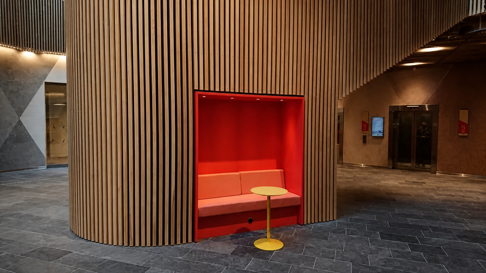

Portfolio
Kvalitet i
verkligheten.
Här kan du se några av våra utförda jobb i bilder. Vi arbetar både lokalt och utanför Sveriges gränser.
Kontakta Jensens Finsnickerier i Gävle för mer information.



Portfolio
Här kan du se några av våra utförda jobb i bilder. Vi arbetar både lokalt och utanför Sveriges gränser.
Kontakta Jensens Finsnickerier i Gävle för mer information.